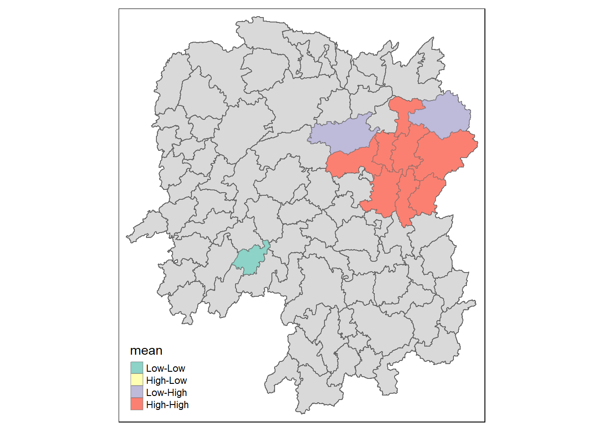

pacman::p_load(sf, sfdep, tmap, tidyverse)Global and Local Measures of Spatial Autocorrelation
In this exercise, we are introduced to the sfdep package which is a wrapper on spdep and enables us to work directly with sf objects. It is also written in such a way to fully take advantage of the tidyverse framework.
Importing and Loading packages
This exercise will make use of five R packages: sf, tidyverse, tmap, and sfdep.
sf - for importing, managing and processing vector-based geospatial data
tidyverse - collection of packages for performing data importation, wrangling and visualization
tmap - for plotting cartographic quality maps
sfdep - functions to create spatial weights, autocorrelation statistics for sf objects
The code chunk below uses p_load() of pacman package to check if the packages are installed in the computer. It installs them first if they are not. It then loads them into R.
We also define a random seed value for repeatability of any simulation results.
set.seed(1234)Data Import and Preparation
For this exercise, we will make use of the Hunan administrative map shapefile and economic indicators csv that we have used in the hands-on exercises.
The code chunk below uses st_read() of the sf package to load the Hunan shapefile into an R object.
hunan <- st_read(dsn = "data/geospatial",
layer = "Hunan")Reading layer `Hunan' from data source
`C:\drkrodriguez\ISSS626-GAA\In-class\In-class_Ex04\data\geospatial'
using driver `ESRI Shapefile'
Simple feature collection with 88 features and 7 fields
Geometry type: POLYGON
Dimension: XY
Bounding box: xmin: 108.7831 ymin: 24.6342 xmax: 114.2544 ymax: 30.12812
Geodetic CRS: WGS 84We then use the code chunk below to load the csv file with the indicators into R using read_csv()
hunan2012 <- read_csv("data/aspatial/Hunan_2012.csv")Rows: 88 Columns: 29
── Column specification ────────────────────────────────────────────────────────
Delimiter: ","
chr (2): County, City
dbl (27): avg_wage, deposite, FAI, Gov_Rev, Gov_Exp, GDP, GDPPC, GIO, Loan, ...
ℹ Use `spec()` to retrieve the full column specification for this data.
ℹ Specify the column types or set `show_col_types = FALSE` to quiet this message.Data Preparation
We then update the first object, which is of sf type, by adding in the economic indicators from the second object using left_join() as in the code chunk below
hunan <- left_join(hunan,hunan2012) %>%
select(1:4, 7, 15)Joining with `by = join_by(County)`If we check the contents of hunan using head(), we see that it now includes a column GDDPPC
head(hunan)Simple feature collection with 6 features and 6 fields
Geometry type: POLYGON
Dimension: XY
Bounding box: xmin: 110.4922 ymin: 28.61762 xmax: 112.3013 ymax: 30.12812
Geodetic CRS: WGS 84
NAME_2 ID_3 NAME_3 ENGTYPE_3 County GDPPC
1 Changde 21098 Anxiang County Anxiang 23667
2 Changde 21100 Hanshou County Hanshou 20981
3 Changde 21101 Jinshi County City Jinshi 34592
4 Changde 21102 Li County Li 24473
5 Changde 21103 Linli County Linli 25554
6 Changde 21104 Shimen County Shimen 27137
geometry
1 POLYGON ((112.0625 29.75523...
2 POLYGON ((112.2288 29.11684...
3 POLYGON ((111.8927 29.6013,...
4 POLYGON ((111.3731 29.94649...
5 POLYGON ((111.6324 29.76288...
6 POLYGON ((110.8825 30.11675...Visualization of the Development Indicator
Before we move to the main analyses, we can visualize the distribution of GCPPC by using tmap package.
tm_shape(hunan) +
tm_fill("GDPPC",
n = 5,
style = "quantile",
palette = "Blues") +
tm_borders(alpha = 0.5) +
tm_layout(main.title = "Hunan GDP per capita")Global Measures of Spatial Autocorrelation
Step 1: Computing Deriving Queen’s Contiguity Weights
We use the code chunk below to compute for the contiguity weight matrix using Queen’s criterion.
wm_q <- hunan %>%
mutate(nb = st_contiguity(geometry),
wt = st_weights(nb,
style="W"),
.before=1)The st_weights() function allows three arguments:
nb-style-allow_zero-
Step 2a: Performing Global Moran’s I Test
The Global Moran’s I test can be performed using global_moran_test() of the sfdep package.
global_moran_test(wm_q$GDPPC,
wm_q$nb,
wm_q$wt)
Moran I test under randomisation
data: x
weights: listw
Moran I statistic standard deviate = 4.7351, p-value = 1.095e-06
alternative hypothesis: greater
sample estimates:
Moran I statistic Expectation Variance
0.300749970 -0.011494253 0.004348351 At α=0.05, the test shows that we reject a null hypothesis that the GDPPC values are randomly distributed. As the test statistic is above 0, then the data is showing signs of clustering.
Step 2b: Performing Global Moran’s I Permutation Test
Monte Carlo simulation on the (Global Moran’s I) statistic is performed using global_moran_perm() of the sfdep package. The code chunk below performs 100 simulations (nsim + 1)
global_moran_perm(wm_q$GDPPC,
wm_q$nb,
wm_q$wt,
nsim = 99)
Monte-Carlo simulation of Moran I
data: x
weights: listw
number of simulations + 1: 100
statistic = 0.30075, observed rank = 100, p-value < 2.2e-16
alternative hypothesis: two.sidedWe get consistent result with the one-time run, but with a lower p-value. (and higher confidence)
Local Measures of Spatial Autocorrelation
As we see that there are presence of clusters, the next step is to use local measure’s of spatial autocorrelation, or local indicators of spatial association, LISA, to identify where the clusters are.
Computing Local Moran’s I
We compute for the local Moran’s I statistic for each unit by using local_moran() of sfdep package. The unnest() function expands the elements of list local_moran as separate columns in the lisa object.
lisa <- wm_q %>%
mutate(local_moran = local_moran(
GDPPC, nb, wt, nsim = 99),
.before = 1) %>%
unnest(local_moran)We can examine the columns of lisa using the code chunk below.
glimpse(lisa)Rows: 88
Columns: 21
$ ii <dbl> -1.468468e-03, 2.587817e-02, -1.198765e-02, 1.022468e-03,…
$ eii <dbl> 0.0017692414, 0.0064149158, -0.0374068734, -0.0000348833,…
$ var_ii <dbl> 4.179959e-04, 1.051040e-02, 1.020555e-01, 4.367565e-06, 1…
$ z_ii <dbl> -0.15836231, 0.18984794, 0.07956903, 0.50594053, 0.448752…
$ p_ii <dbl> 0.874171311, 0.849428289, 0.936580031, 0.612898396, 0.653…
$ p_ii_sim <dbl> 0.82, 0.96, 0.76, 0.64, 0.50, 0.82, 0.08, 0.08, 0.02, 0.2…
$ p_folded_sim <dbl> 0.41, 0.48, 0.38, 0.32, 0.25, 0.41, 0.04, 0.04, 0.01, 0.1…
$ skewness <dbl> -0.8122108, -1.0905447, 0.8239085, 1.0401038, 1.6357304, …
$ kurtosis <dbl> 0.651875433, 1.889177462, 0.046095140, 1.613439800, 3.960…
$ mean <fct> Low-High, Low-Low, High-Low, High-High, High-High, High-L…
$ median <fct> High-High, High-High, High-High, High-High, High-High, Hi…
$ pysal <fct> Low-High, Low-Low, High-Low, High-High, High-High, High-L…
$ nb <nb> <2, 3, 4, 57, 85>, <1, 57, 58, 78, 85>, <1, 4, 5, 85>, <1,…
$ wt <list> <0.2, 0.2, 0.2, 0.2, 0.2>, <0.2, 0.2, 0.2, 0.2, 0.2>, <0…
$ NAME_2 <chr> "Changde", "Changde", "Changde", "Changde", "Changde", "C…
$ ID_3 <int> 21098, 21100, 21101, 21102, 21103, 21104, 21109, 21110, 2…
$ NAME_3 <chr> "Anxiang", "Hanshou", "Jinshi", "Li", "Linli", "Shimen", …
$ ENGTYPE_3 <chr> "County", "County", "County City", "County", "County", "C…
$ County <chr> "Anxiang", "Hanshou", "Jinshi", "Li", "Linli", "Shimen", …
$ GDPPC <dbl> 23667, 20981, 34592, 24473, 25554, 27137, 63118, 62202, 7…
$ geometry <POLYGON [°]> POLYGON ((112.0625 29.75523..., POLYGON ((112.228…The local_moran() function generated 12 columns– which are the first twelve in the lisa dataframe. Key columns are:
ii- local Moran i statisticp_ii_sim- p value from simulationFor the clustering / outlier classification, there are three options in different columns:
mean,median,pysal.
Visualising Local Moran I’s
The code chunk below prepares a choropleth map of the statistic in the ii and the p_ii_sim field
tmap_mode("plot")tmap mode set to plottingtm_shape(lisa) +
tm_fill(c("ii", "p_ii_sim"), title = c("Local Moran's I","P Value")) +
tm_borders(alpha = 0.5) +
tm_view(set.zoom.limits = c(6,8)) +
tm_layout(
main.title = "Local Moran's I and P-values")Variable(s) "ii" contains positive and negative values, so midpoint is set to 0. Set midpoint = NA to show the full spectrum of the color palette.LISA map
A LISA map is a categorical map showing outliers and clusters.
lisa_sig <- lisa %>%
filter(p_ii < 0.05)
tm_shape(lisa) +
tm_polygons() +
tm_borders(alpha = 0.5) +
tm_shape(lisa_sig) +
tm_fill("mean") +
tm_borders(alpha = 0.4)Warning: One tm layer group has duplicated layer types, which are omitted. To
draw multiple layers of the same type, use multiple layer groups (i.e. specify
tm_shape prior to each of them).
Computing Local Gi* Statistics
The code below computes the weight matrix using inverse distance.
wm_idw <- hunan %>%
mutate(nb = st_contiguity(geometry),
wts = st_inverse_distance(nb, geometry,
scale = 1,
alpha = 1),
.before=1)! Polygon provided. Using point on surface.Warning: There was 1 warning in `stopifnot()`.
ℹ In argument: `wts = st_inverse_distance(nb, geometry, scale = 1, alpha = 1)`.
Caused by warning in `st_point_on_surface.sfc()`:
! st_point_on_surface may not give correct results for longitude/latitude dataWe then compute the local Gi* by using the code below.
HCSA <- wm_idw %>%
mutate(local_Gi = local_gstar_perm(
GDPPC, nb, wt, nsim = 99),
.before = 1) %>%
unnest(local_Gi)HCSASimple feature collection with 88 features and 18 fields
Geometry type: POLYGON
Dimension: XY
Bounding box: xmin: 108.7831 ymin: 24.6342 xmax: 114.2544 ymax: 30.12812
Geodetic CRS: WGS 84
# A tibble: 88 × 19
gi_star cluster e_gi var_gi std_dev p_value p_sim p_folded_sim skewness
<dbl> <fct> <dbl> <dbl> <dbl> <dbl> <dbl> <dbl> <dbl>
1 0.0416 Low 0.0114 0.00000641 0.0493 9.61e-1 0.7 0.35 0.875
2 -0.333 Low 0.0106 0.00000384 -0.0941 9.25e-1 1 0.5 0.661
3 0.281 High 0.0126 0.00000751 -0.151 8.80e-1 0.9 0.45 0.640
4 0.411 High 0.0118 0.00000922 0.264 7.92e-1 0.6 0.3 0.853
5 0.387 High 0.0115 0.00000956 0.339 7.34e-1 0.62 0.31 1.07
6 -0.368 High 0.0118 0.00000591 -0.583 5.60e-1 0.72 0.36 0.594
7 3.56 High 0.0151 0.00000731 2.61 9.01e-3 0.06 0.03 1.09
8 2.52 High 0.0136 0.00000614 1.49 1.35e-1 0.2 0.1 1.12
9 4.56 High 0.0144 0.00000584 3.53 4.17e-4 0.04 0.02 1.23
10 1.16 Low 0.0104 0.00000370 1.82 6.86e-2 0.12 0.06 0.416
# ℹ 78 more rows
# ℹ 10 more variables: kurtosis <dbl>, nb <nb>, wts <list>, NAME_2 <chr>,
# ID_3 <int>, NAME_3 <chr>, ENGTYPE_3 <chr>, County <chr>, GDPPC <dbl>,
# geometry <POLYGON [°]>Visualising Gi*
The code chunk
tm_shape(HCSA) +
tm_polygons()+
tm_shape(filter(HCSA,p_sim < 0.05)) +
tm_polygons(c("cluster","p_sim"), title=c("Cluster","P-Value"))